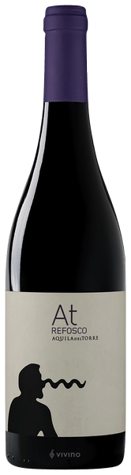
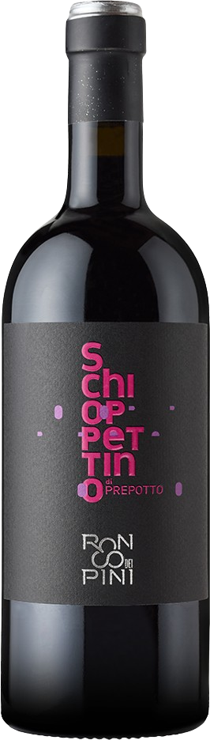
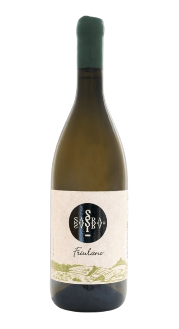
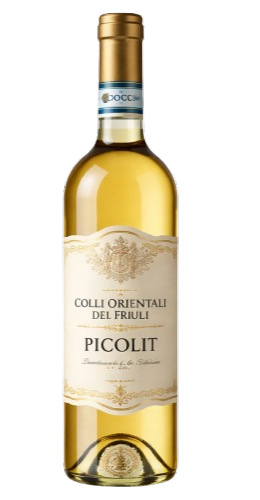
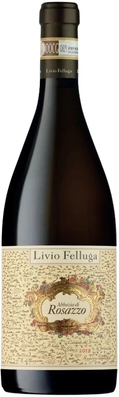
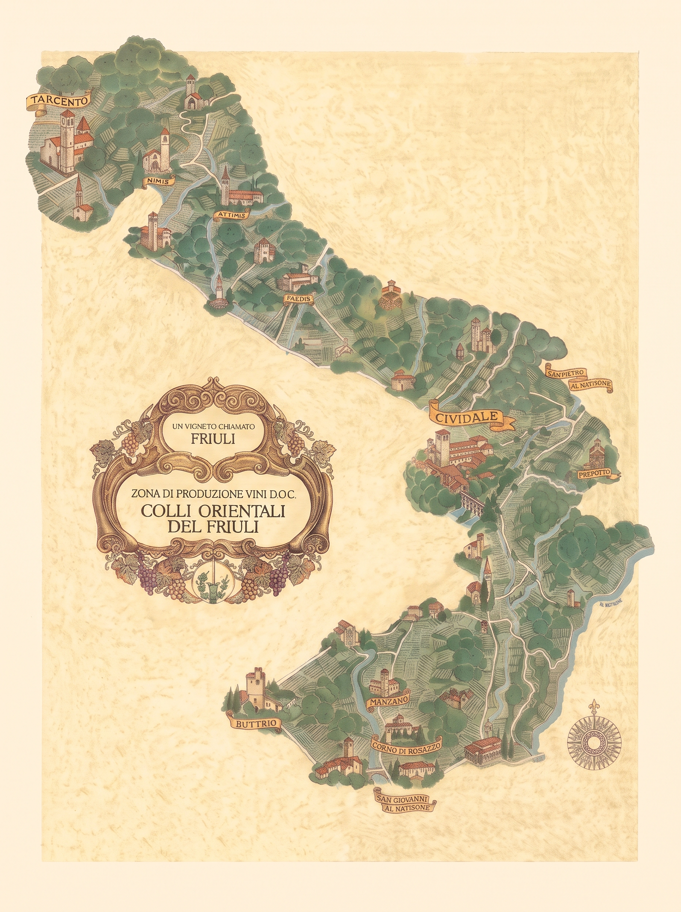

I Colli Orientali del Friuli sono una storica area vitivinicola della provincia di Udine, riconosciuta come DOC dal 1970, nota per terreni di marne e arenarie definiti ponca e per la produzione di vini bianchi e rossi da vitigni autoctoni e internazionali.
Il Territorio
Adagiati a forma di anfiteatro naturale al confine orientale d'Italia, questi colli godono di un equilibrio climatico quasi irripetibile. Le Alpi e le Prealpi Giulie formano una barriera massiccia contro i gelidi venti del nord, mentre dal vicino Mare Adriatico risalgono correnti miti e salmastre. Questo abbraccio genera marcate escursioni termiche tra il giorno e la notte, permettendo ai grappoli di maturare lentamente e concentrare un corredo aromatico fresco, intenso e sfaccettato.
Zona Nord
Clima: Più fresco e ventilato, protetto a ridosso delle Prealpi Giulie
Caratteristica: Forte escursione termica tra giorno e notte, che dona ai vini aromi intensi ed elevata freschezza
Vini tipici

Ramandolo (DOCG)
Vino dorato dolce da uve Verduzzo Friulano; profumi di miele, albicocca secca e un finale tipicamente tannico e asciutto.

Refosco
Rosso autoctono antico e vibrante, noto per la spiccata acidità, note di frutti di bosco scuri e sentori selvatici.
Zona Centro
Clima: Mite e collinare, con suoli molto ricchi di ponca profonda
Caratteristica: Cuore storico della DOC: terreni perfetti per estrarre mineralità, sapidità e speziature uniche
Comuni principali:
Vini tipici

Schioppettino
Rosso aristocratico e inconfondibile, celebre per la freschezza e l'intensa nota speziata di pepe verde in grani.

Friulano
Il grande bianco della tradizione: minerale, strutturato, floreale, con il tipico e piacevole finale di mandorla amara.
Zona Sud
Clima: Rilievi più dolci, caldi e accarezzati dalle brezze marine dell'Adriatico
Caratteristica: Temperature più miti che favoriscono ottime maturazioni zuccherine, eleganza e vini longevi
Comuni principali:
Vini tipici

Picolit (DOCG)
Rarissimo vino da meditazione ottenuto da acinellatura naturale; morbido, regale, con aromi di pesca sciroppata e acacia.

Rosazzo (DOCG)
Grande bianco da uvaggio guidato da uve autoctone; solenne, caldo, longevo e di straordinaria ampiezza gusto-olfattiva.

Cenni Storici

La vocazione vinicola dei Colli Orientali del Friuli affonda le radici nell'epoca romana, quando la vicina Aquileia rappresentava uno dei porti e centri di scambio commerciale più fiorenti dell'Impero, trasformando queste colline in un vigneto prediletto per la produzione di calici destinati a nobili e patrizi. Nel corso dei secoli la cura della vite è passata attraverso il lavoro certosino dei monasteri medievali e la valorizzazione commerciale promossa dalla Repubblica di Venezia, che fece conoscere oltre confine varietà storiche come il Picolit e la Ribolla Gialla. Questo patrimonio millenario ha trovato la sua consacrazione ufficiale nel 1970 con il riconoscimento della DOC "Friuli Colli Orientali", istituita per proteggere e disciplinare una straordinaria biodiversità di vitigni autoctoni cresciuti sulla marna eocenica, tutelando l'identità autentica di un paesaggio modellato da generazioni di vignaioli. La viticoltura nei Colli Orientali affonda le sue radici nell'epoca romana, quando la vicina Aquileia era uno dei porti e centri di commercio più importanti dell'Impero. Nel Medioevo furono soprattutto i monaci benedettini e l'influenza della Repubblica di Venezia a perfezionare la coltivazione della vite, selezionando i vitigni che oggi consideriamo storici e autoctoni. Oggi questa tradizione secolare continua a vivere grazie a generazioni di vignaioli che preservano l'identità del territorio e valorizzano il suolo unico della nostra terra.